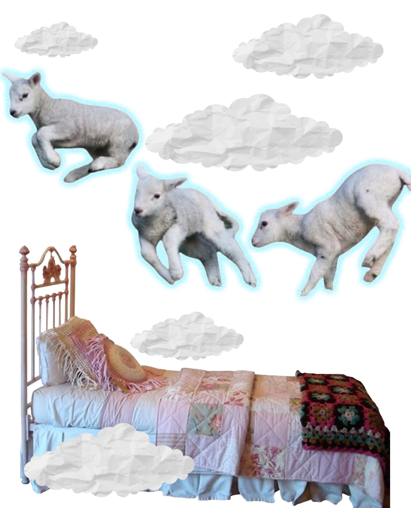

Class 2
I really really hope no one wants a coffee now.
I'm back behind the counter at my work. Funny how I choose to write when I'm supposed to be my busiest.
More collective exercises today. More talking, less & listening. Great, my strongest suit. I like the interactivity of it all.
I keep saying that I'm tired to anybody who asks how am I. Just to seem productive. That yes, I'm SO tired cause I've been SO busy. Truth is, I'm not tired. At all.
I slept full 8 hrs and had plenty of time to rest the previous day. I'm talking too much in comparison to the people that are actually tired.
Can you tell I'm lying?
Maybe my "wellness journey" is actually starting to work? I hope it is.
The teacher mentioned we should start keeping a weekly journal-recap of each class. I hope I'm doing it right. Fundamentally at least, cause appearance-wise, this format is not very journal-like, I should probably change it for the final assignment. Hot pink marker on coffee-stained pages of an old sketchbook.
It's fine, I'll make it work.
I'm a designer after all.
